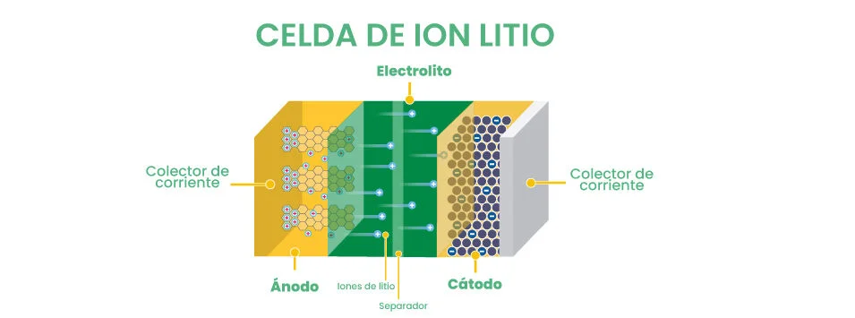
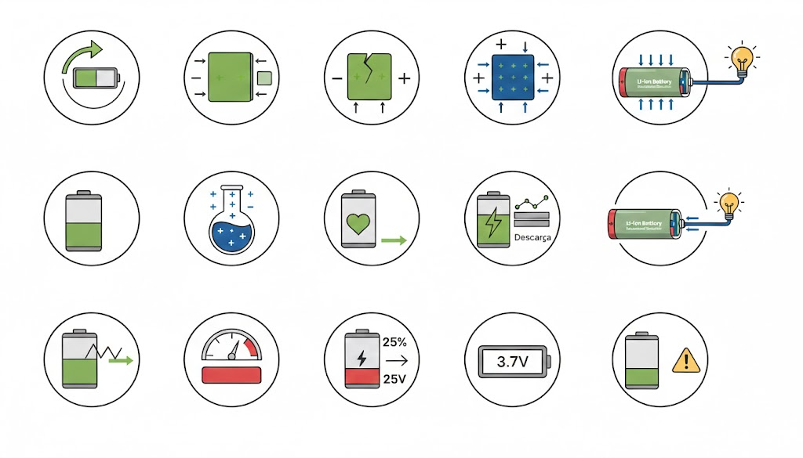

Funcionamiento químico, características, ventajas y desventajas
¿Qué es una batería de iones de litio?
Una batería de iones de litio es un sistema electroquímico que se comporta
simultáneamente como una celda galvánica y electrolítica.
Esto significa que puede generar energía eléctrica durante la descarga
y requiere energía externa para revertir las reacciones durante la carga.
Gracias al uso de nanomateriales de carbono, estas baterías logran una
alta eficiencia energética en un tamaño reducido.
Estructura básica
Las baterías de ion-litio están formadas por los siguientes componentes:
Ánodo (electrodo negativo): Generalmente fabricado de grafito.
Cátodo (electrodo positivo): Compuesto de óxidos de litio con metales como cobalto, níquel o manganeso.
Electrolito: Medio que permite el movimiento de los iones de litio.
Separador: Evita el contacto directo entre ánodo y cátodo, previniendo cortocircuitos.

Durante la descarga, los electrones y los iones de litio se desplazan
hacia el cátodo, generando corriente eléctrica. Durante la carga,
este proceso se invierte.
Conceptos fundamentales para el análisis de baterías de ion-litio
Para comprender los procesos químicos que suceden dentro de estas baterías,
es necesario primero conocer algunos conceptos básicos de estas, con los cuales
los fabricantes nos indican varias de las características de las mismas:

Capacidad:
Hace referencia a la cantidad de energía eléctrica que puede suministrar una batería en un intervalo de tiempo específico, esta media usualmente se da en amperios-horas .
Ciclo:
Se define como el proceso de descargar una batería que ha sido cargada completamente.
Degradación:
Disminución gradual de la capacidad de almacenamiento de energía de una batería.
Electrodo negativo:
Elemento del sistema donde un componente o elemento químico se somete a una reacción de oxidación.
Electrodo positivo:
Elemento en el sistema en donde un componente o elemento químico se somete a una reacción de reducción.
Electrolito:
Solución acuosa o no acuosa de sales, bases o ácidos en donde se permite el flujo de electrones.
Estado de carga (SOC):
En términos generales está definido como la energía disponible en la batería.
Estado de salud (SOH):
Hace referencia al porcentaje del nivel de degradación que ha sufrido la batería.
Impedancia interna:
Medida de oposición al paso de corriente en un circuito cuando se aplica voltaje.
Proceso de carga:
Es definido como el proceso inverso, en donde la oxidación ocurre en el electrodo positivo, y la reducción en el electrodo negativo (el sistema actúa como una celda electrolítica).
Proceso de descarga:
Es definido como el flujo de electrones desde el ánodo (oxidación) hasta el cátodo (reducción) por medio de una carga externa.
Profundidad de descarga (DoD):
Se define como el porcentaje de cuanta batería se ha usado.
Vida útil remanente:
Se define como la capacidad máxima de energía remanente en la batería.
Voltaje nominal:
Se define como el voltaje de operación del sistema.
Voltaje de corte de descarga:
Se define como el voltaje mínimo que puede alcanzar una batería durante el proceso de descarga, es empleado como medida de protección para evitar daños irreversibles en la batería.
Ventajas de las baterías de iones de litio
Este tipo de baterías nos brindan numerosas ventajas a diferencia de un celda galvánica
por sí sola, sobre aquellas ventajas ya quen tienen una mayor densidad de energía, una mayor eficiencia y un ciclo de vida más largo.
Las baterías de plomo ácido permiten 1 500 ciclos de vida, mientras que la tecnología
de las baterías de litio ofrece una duración de hasta 2 500 ciclos.
Comparación con pilas primarias
Existen dos tipos de clasificaciones para las baterias, las primarias y las secundarias.
Las baterías primarias, también conocidas como no recargables, son aquellas donde la reacción
electroquímica no puede revertirse, es decir solo pueden ser descargadas una sola vez.
Las baterías secundarias o recargables como su nombre lo indica permiten cargar y descargar
la batería un número considerable de veces (tal y tal)
Ejemplos de baterias primarias son zinc-carbono, alcalinas (zinc/dióxido de manganeso),
zinc/óxido de plata, zinc-aire y litio, y ejemplos de baterias secundarias:
ácido plomo, níquel-cadmio (Ni-Cd), níquel-metal hidruro (Ni-MH),
ion de litio (Li-Ion) y polímero de litio (LIPo).
La diferencia más notable entre ambas son el tipo de reacciones que suceden dentro de estas celdas,
pues en las secundarias son reversibles y en las primarias no.
Controles remotos, relojes, linternas, juguetes etc.
Controles remotos, relojes, linternas, juguetes etc.
Controles remotos, relojes, linternas, juguetes etc.
Desventajas y riesgos asociados a las baterías de ion-litio
Reactividad del litio y riesgos térmicos
Las principales desventajas de las baterías de ion-litio se relacionan directamente
con el elemento que las compone: el litio. Este metal se caracteriza por ser altamente
reactivo, lo que permite una elevada densidad de energía, pero también implica riesgos
importantes.
Diversos autores señalan que
“su principal desventaja es el riesgo potencial de explosiones e incendios, los cuales
pueden ocurrir cuando la batería es sobrecargada o cargada a velocidades excesivas con
corrientes demasiado altas”
(Goodenough & Park, 2013).
Sistemas de protección y control electrónico
Debido a este riesgo, es indispensable que las baterías de ion-litio cuenten con sistemas
electrónicos de protección, conocidos como Battery Management Systems (BMS).
Estos sistemas regulan parámetros críticos como el voltaje, la corriente y la temperatura,
evitando condiciones que puedan provocar fallas catastróficas.
Sin la presencia de estos sistemas de control, el uso cotidiano de baterías de ion-litio
representaría un peligro significativo tanto para los usuarios como para los dispositivos
en los que se integran.
Daños físicos y químicos en la batería
Además de los riesgos térmicos, las baterías de litio pueden presentar problemas que
reducen su vida útil o comprometen su seguridad. Entre los más comunes se encuentran
las deformaciones físicas ocasionadas por golpes, caídas o aplastamientos.
Asimismo, someter la batería a niveles de corriente o voltaje fuera de los rangos
recomendados por el fabricante puede provocar alteraciones químicas internas que
aceleran su degradación y aumentan el riesgo de fallas.
Formación de dendritas de litio
Uno de los fenómenos más peligrosos asociados a estas baterías es la
formación de dendritas de litio, estructuras microscópicas que pueden
crecer durante ciclos de carga y descarga inadecuados.
Cuando estas dendritas perforan el separador interno, los electrodos pueden entrar en
contacto directo, provocando cortocircuitos internos. Esta situación incrementa de
forma considerable el riesgo de incendios o explosiones
(Tarascon & Armand, 2001).
Importancia del uso responsable
En conjunto, estos factores evidencian que, aunque las baterías de ion-litio ofrecen
múltiples ventajas tecnológicas, su uso seguro y eficiente depende en gran medida de
un manejo adecuado, sistemas de protección eficaces y prácticas responsables por parte
de los usuarios.
Fuentes de información
La información presentada en esta sección fue obtenida a partir de artículos científicos
y revistas especializadas, las cuales abordan el funcionamiento, las características,
las fallas y el envejecimiento de las baterías de ion-litio desde un enfoque técnico
y experimental.
Pico, H., Pazmiño, I., & Ponce, B. (2021).
Análisis de los factores que intervienen en el envejecimiento prematuro de las baterías de ion-litio mediante modelo teórico validado en laboratorio.
Revista Técnica Energía, 17(2), 83–91.
https://doi.org/10.37116/revistaenergia.v17.n2.2021.432